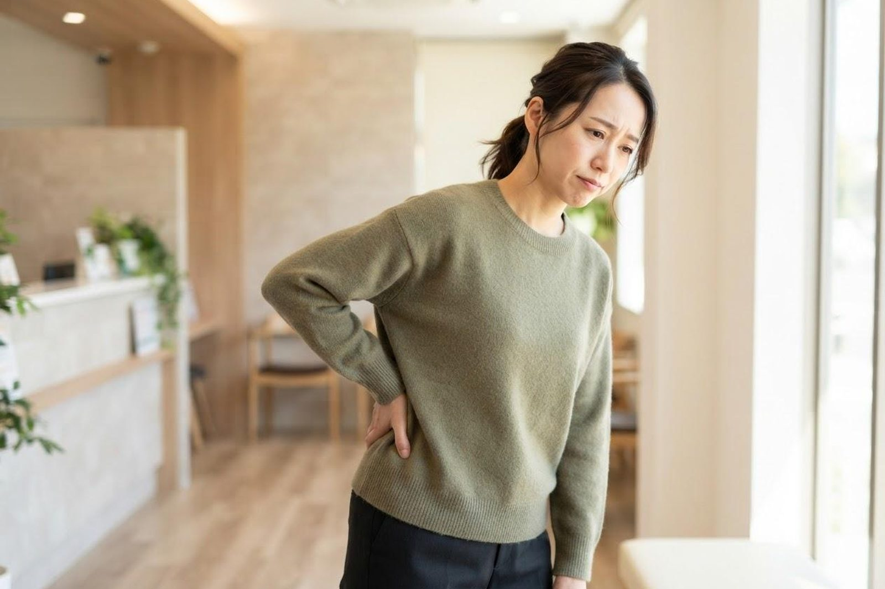

慢性的な腰痛・肩の痛みがあります。リハビリテーションを受けることはできますか？
A. 回答はい、慢性的な腰痛や肩の痛みは、当院のリハビリテーション科でご相談いただける症状です。まず問診や診察で痛みの部位・経過・生活への影響などを確認し、必要に応じて画像検査などを行ったうえで、運動療法や物理療法を中心とした外来リハビリテーションが選択肢のひとつとして検討されます。

腰痛・肩の痛みに対するリハビリテーションの考え方
慢性的な腰痛は、体幹まわりの筋力低下や柔軟性の低下、姿勢のくせなどが関わっていることが多いとされています。そのため保存的な治療のひとつとして、体幹の筋肉を強化し姿勢を整える運動療法が広く推奨されています。運動療法は痛みの軽減や日常生活動作の改善に役立つと考えられており、理学療法士による指導のもとで、ストレッチや筋力トレーニングを段階的に行っていきます。
肩の痛み（いわゆる四十肩・五十肩と呼ばれる肩関節周囲炎など）についても、痛みの強い急性期は無理のない範囲での安静と軽い動作訓練から始め、その後の時期には関節可動域訓練（ストレッチ）、さらに回復期には筋力強化や日常動作の練習へと、症状の経過に合わせて内容を調整していくのが一般的な考え方です。あわせて温熱療法などの物理療法を組み合わせることもあります。
整形外科的な検査やリハビリが検討される症状
- 数週間以上続く腰の痛みや張り、動作時のこわばり
- 肩が特定の方向に上がりにくい、着替えや洗髪がしにくいなどの可動域の制限
- デスクワークや家事・育児など同じ姿勢の継続による慢性的な肩こり・腰の重だるさ
- ぎっくり腰のような急な痛みの後、痛みが長引いている場合
これらの症状がある場合は、まず診察でレントゲンなどの検査が必要かどうかを判断したうえで、リハビリテーションの適応を検討します。
受診の目安
次のような場合は、単なる筋肉や関節の痛みではなく、ほかの病気が隠れている可能性があるため、様子を見ずにご相談ください。
すぐに受診を検討してください
- 排尿・排便がしづらい、尿がもれる、おしりや股のまわりの感覚が鈍いといった症状を腰痛とともに伴う（緊急性が高いとされる状態です）
- 足に力が入らない、つま先が上がらない、歩きにくいなど、脱力やしびれが広がってきている
- 発熱を伴う腰や肩の痛み
- 安静にしていても痛みが軽くならない、日ごとに悪化する、夜間に痛みで目が覚める
- 転倒や事故など、はっきりしたきっかけの後に強い痛みが出た（骨折の可能性があります）
- がんや骨粗しょう症などの治療を受けている方に、新たな強い腰背部痛が出た
早めの受診をおすすめします
- 数週間以上、腰や肩の痛み・張りが続いている
- 肩が特定の方向に上がりにくく、着替えや洗髪などの動作に支障が出ている
- ぎっくり腰のような急な痛みのあと、痛みが長引いている
- 足や腕に軽いしびれを感じるが、力の入りにくさまではない
- 市販の湿布や痛み止めを使っても、改善がはっきりしない
- 同じ姿勢での作業が多く、慢性的な肩こり・腰の重だるさが続いている
参考にした情報
本ページは一般的な情報提供を目的としています。症状の程度や経過には個人差があり、緊急性が高いと感じる場合は救急外来の受診もご検討ください。ご不明な点はお電話（086-525-0600）にてお問い合わせください。
腰や肩の痛みが続いてお困りの際は、お気軽にご相談ください。
最終更新：2026年8月26日